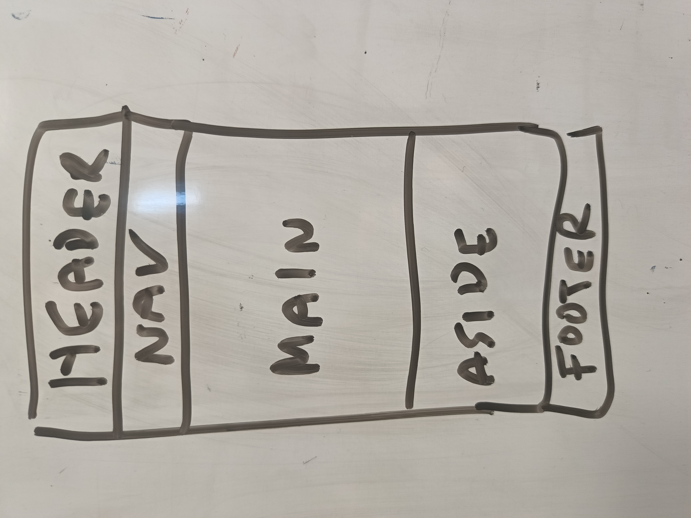
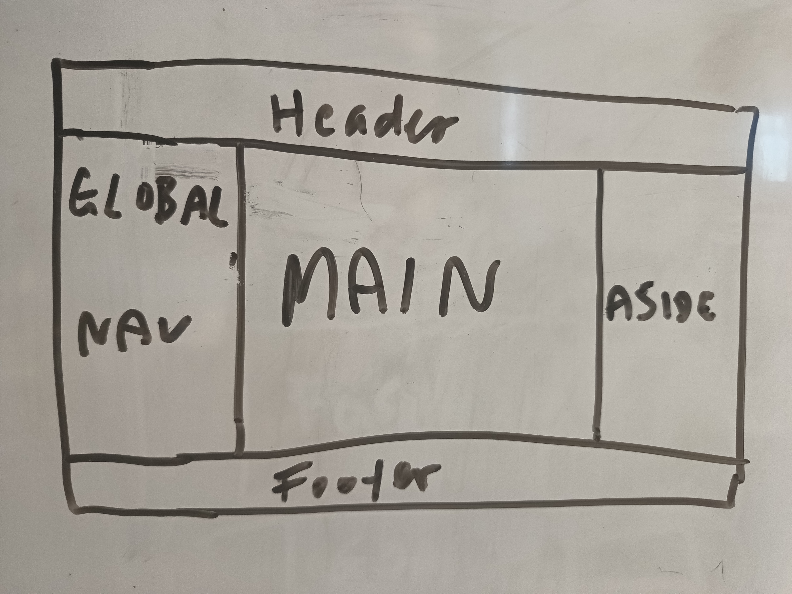
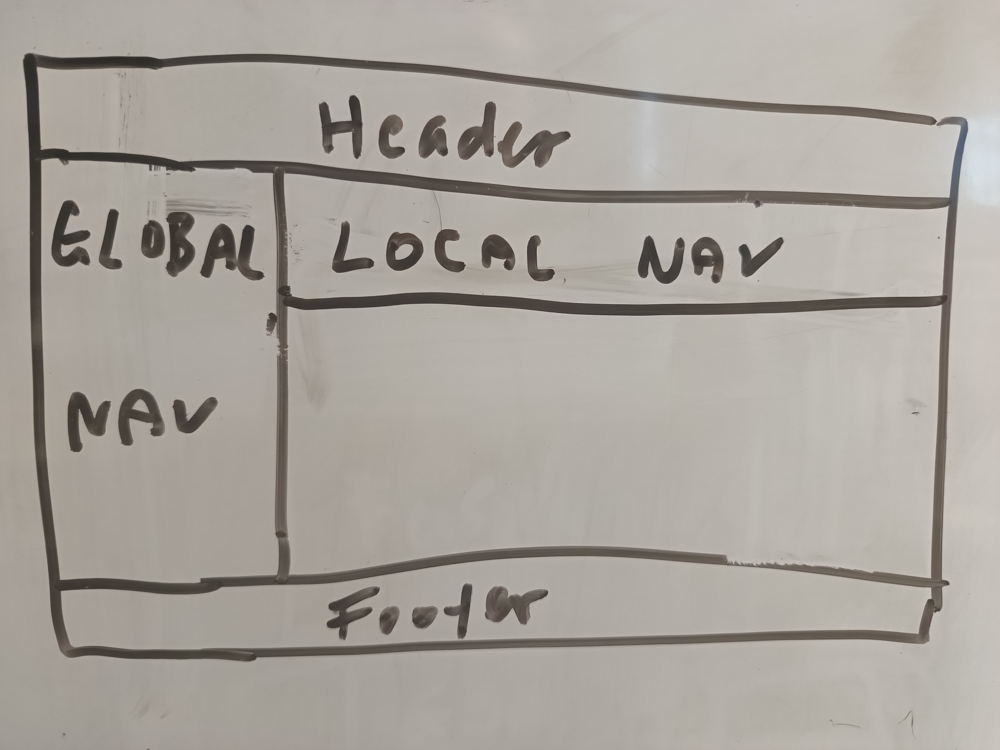

1. Syfte och målgrupp
Syfte
I uppgiften skapades en webbplats för en påhittad förening med namn "Gyas vänner" som är en förening för historieintresserade i Skåne. Föreningen är startad en gång i Stehag därav namnet "Gyas vänner", Gya är ett troll som enligt myten har bott i Stehag.
Syfte med webbplatsen är vara ett av många verktyg i föreningens strävan att uppnå sina mål, eller mer specifikt:
- Att utbilda allmänheten om historia, främst om Skånsk historia.
- Att försöka locka till sig nya medlemmar.
- Att att vara en kommunikationsplattform för föreningen, dvs att ett ställe för föreningen att informera om föreningens verksamhet, men också ett ställe för medlemmarna att lära känna varandra och utbyta erfarenheter.
- Att använda som inkomst-källa till föreningen, tex genom att sälja produkter som är relavanta.
Målgrupperna
Målgruppen består av historieintresserade i alla åldrar, både nybörjare och mer kunniga.
Jag har skapat några målgrupper med gemensamma behov. Notera att de är inte ömsesidigt uteslutande egenskaper, dvs samma person kan hamn i flera grupper, men varje grupp fokusera på vissa behov, tex äldre nybörjare eller yngre proffs.
- Historieintresserade i allmänhet
- Historiska nybörjare, har precis förstått att historia är kul.
- Proffs som kanske hållt på hela livet. Är kanske historiker eller åtminstone amatör-historiker. Kanske forskare eller författare.
- Internet-vana människor som vet hur man navigerar på hemsidor och har förståelse för fenomenet. Ofta unga personer som har använt internet i hela sitt liv.
- Internet-ovana människor som knappt vet hur man sätter på en dator. Ofta äldre som kanske också har tex sämre syn
- Medlemmer i föreningen
- Personer som inte är medlemmar i föreningen men som vill bli det.
Användarnas behov
- Historieintresserade i allmänhet
- Att kunna hitta information om Skåne och dess historia
- Att hitta vänskap i en gemensam hobby
- Historiska nybörjare
- Att lära sig av mer kunniga föreningsvänner
- Att få hjälp och tips att hitta rätt i sin "utbildning", dvs få tex tips om böcker, andra föreninger, tidskrifter etc.
-
Proffs:
- Att få möjlighet att tex få ut sin forskning eller arbete, tex böcker till en större krets.
- Att få dela med av sina erfarenheter och kunskap.
-
För medlemmar:
- Kunna få kontakt med andra medlemmar i olika syften, tex hitta en vän som har samma intresse, eller någon som kan hjälpa en på olika sätt.
- Hålla koll på när saker händer, vilka aktiviteter som händer när och hur.
-
För icke-medlemmar men som poteniellt vill bli det:
- Information om hur föreningen, dvs syfte och verksamhet. Är det något för mig?
- Medlemsservice, hur blir jag medlem?
2. Kravspecifikation
Innehåll
- Startsidan startsidan ska sammanfatta lite av föreningens hjärta på ett överskådligt sätt, följande saker kan sätta som krav:
- Presentation av föreningen från ordföranden
- En artikel om någon genomförd aktivitet med bilder. En intervju med en av deltagarna.
- Kalendarium, dvs information om de nästkommande aktiviteterna.
-
I footern på varje sida ska det finnas:
- Kontaktuppgifter
- Feedback-funktion
- En länk till hur man blir medlem
- Föreningsinformation:
- Föreningens syfte
- Föreningens policy
- Föreningens verksamhet, tex grupperna osv.
- Föreningens styrelse
- Kontaktuppgifter till föreningen
- Medlemsavgift och hur man betalar
-
Historie-information, i första hand fokuserat på Skåne.
Här skulle man kunna lägga till hur mycket som helst, tex information om härader, byar, olika teman (teknikhistoria etc) men jag har redan här valt att begränsa mig för uppgiften skull. Man kan väl tänka att föreningens framtida mål är att fylla upp detta med mer information. Och framför allt information som skapas av medlemmarna själv, tex lokalhistoria etc.
- Skånes övergripande historia
- Historia om Skånes större städer, från 1600-talet fram till nu. Prio är de största och viktigaste städerna Malmö, Lund, Helsingborg, Kristianstad. Varje stad ska presenteras i följande tidsperioder:
- Forntid och medeltid
- Renässans och tidig modern tid
- Stormaktstid och barock
- Upplysningstid och industraliseringen
- Modern tid och globaliseringen
-
Aktivitets-information
- Ett program, dvs de aktuella aktiviterna framöver.
- Artiklar som beskriver aktiviteter som föreningar har genomfört tidigare.
- Information om hur föreningen planerar och genomför aktiviteter.
- Information om hur medlemmar kan bidra till aktiviteter.
- Medlemsforum. Det ska finnas ett medlemsforum på hemsidan där medlemarna kan kommunicera om allt möjligt.
-
Butiken
- Ett antal varor till salu som är relaterade till Stehag, föreningen eller historia i allmänhet.
- Möjlighet för medlemmar att sälja produkter också, tex lokala författare.
Funktion
- Att kunna betala medlemsavgiften
- Att kunna skriva och svara på inlägg till andra medlemmar
- Man ska kunna göra feedback på en specifik sida eller allmän feedback
- Att kunna kontakta föreningen
- Man ska kunna köpa varor i butiken
3. Beskrivning av arbetet
Jag började göra en plan, vecka för vecka, dvs vad ska jag fokusera på varje vecka.
Jag kollade på element-planen, repeterade lite översiktligt och skrev ner vad som är output från de olika planen.
| Elementplan | Output |
|---|---|
| Strategy |
Strategidokument som innehåller:
|
| Scope |
|
| Structure |
|
| Skeleton |
|
| Surface |
|
Jag försöker strukturerat följa elementen-planen, men kommer jag på saker som har med senare plan försöker skriva ner på rätt ställe så jag inte glömmer det.
Det gick rätt bra att följa planen fram till ungefär när Structure var klar, då börja jag koda. Men sedan gick jag tillbaka till planerna och fyllde på i rapporten.
3.1 Strategy
En strategi för vår "produkt" ska defineras, dvs webbplatsen som stöd för senare beslut tex scope osv (Jesse James Garret, 2011, sida 36).
- Vad vill vi få ut av produkten?
- Vad vill våra användare få ut av produkten?
Jag delar in i målgrupper för att se behoven från lite olika perspektiv. Ibland kan det vara olika behov från olika målgrupper som man kan vara svåra att förena (Jesse James Garret, 2011, sidan 45). Men det är nog bättre att veta om vad det finns för behov och ta det bästa beslut som efter omständigheterna går att göra.
Syfte, målgrupp och användarnas behov har jag sammanfattat i ett strategi-dokument, dvs 1. Syfte och målgrupp, vilket också är resultat av strategy-planet.
3.2 Scope
Nu behöver vi få ner strategin och syftet med webbplatsen till mer konkreta krav, detta av flera skäl (Jesse James Garret, 2011, sidorna 57-61):
- För att säkerställa att webbplatsen inte avviker från strategin
- För att undvika missförstånd, både mellan kund och beställare men även internt om det är ett stort projekt.
- För att lättare kunna planera budget (tid och resurser).
- För att veta när vi är färdiga.
- För att veta vad som vi INTE ska göra, så vi inte råkar hamna på fel spår.
Se 2. Kravspecifikation, som är resultatet av Scope-planet.
Notera att jag använt mig av chatgtp för att skapa innehåll och texter. Uppgiften är ju fokuserad på hur man organiserar informationen på bästa sätt, men eftersom detta är en fiktiv hemsida för en fiktiv förening och den ska göras som en uppgift i en kurs har jag låtit chat-gtp vara information/innehållskapare.
3.3 Structure
Min struktur på hemsidan tänker jag mig så här:
- Startsida
- Historia
Skånes historia, de större städerna. Jag tänker mig en slags "matrix"-struktur (Jesse James Garret, 2011, sida 93-94) som passar historiskt material som spänner både över geografin och tiden. Så följande struktur är alltså "3-dimensionell", lite svårt att beskriva det med HTML dock, men den geografiska struktur är x och y axel medans tid strukturen är z axeln i en tänkt 3d-diagram. Notera att jag begränsat mig lite i epok-strukturen, kände att det blev för stort projekt för uppgiften denna gång. Jag har också begränsat mig till de 4 större städerna.
- Geografisk struktur:
- Skåne
- De 4 största och viktigaste städerna
- Lund
- Malmö
- Helsingborg
- Kristianstad
-
Epok struktur:
- forntid och medeltid
- renässans och tidig modern tid
- stormaktstid och barock
- upplysningstid och industraliseringen
- modern tid och globaliseringen
- Geografisk struktur:
-
Aktiviteter
- Aktuella aktiviteter
- Gamla aktiviteter, sökfunktion
- Information om hur föreningen jobbar med aktiviteter, hur kan medlemmar bidra?
- Medlemsforum
- Butiken
-
Föreningen
- Föreningens syfte
- Föreningens policy
- Styrelse
- Kontaktuppgifter
- Medlemskap, kostnad och hur man blir medlem.
3.3 Skeleton
3.3.1 Navigation Design
Navigation design handlar om hur användaren hittar genom informationen på en webbplats, dvs hur själv vägen till slutmålet via länkar är designad. Den ska uppfylla 3 stycken mål (Jesse James Garret, 2011, sidorna 118-119)- Den måste ge användarna ett sätt att ta sig från en punkt till en annan på webbplatsen.
- Den måste kommunicera en logik i vilka vägar/länkar man presenterar. Vad har de med varandra att göra? Är det någon som är viktigare än någon annan. Dvs försök undvik att bara lista en massa slumpmässiga länkar utan ordning och logik.
- Den måste kommunicera förhållandet mellan kontexten och vägar/länkar. Dvs finns det något förhållande mellan sidan användaren befinner sig och vart länken pekar?
Navigerings-designen på Gyas Vänner webbplats kan delas in lite olika punkter:
Lade en länk på "logon" till startsidan, känns logiskt.
-
Den global navigeringen:
Med den globala navigeringen kan man snabbt hitta till de olika huvud-delarna på webbplatsen.
Den globala navigeringen, dvs länkarna till huvud-kategorierna på webbplatsen, är med på varje sida (dvs "persistant"), dvs som pekar på tex startsidan och föreningsinformation.
2 scenarior ser jag framför mig: antingen har man via en google-sökning hamnat lite snett i hiearkin eller så behöver man "börja om" från någon sub-sida på webbplatsen, dvs man har kanske hittat (eller inte) vad man sökt efter men vill börja om med en ny sökning på webbplatsen (Jesse James Garret, 2011, sidorna 120-121)
-
På historiesidan, dvs "Skånes historia" har jag använt mig av en lokal navigering. Dvs jag har lokala länkar som pekar på de "närmaste" sidorna under kategorin "Skånes historia" (Jesse James Garret, 2011, sida 121).
När det gäller städernas historia navigerar jag mig igenom en matris-struktur, dvs de olika städerna i ena "axeln" och i andra "axeln" tidsepok, se under Structure 3.3.
-
Jag länkar också i text där jag finner det logiskt. Användaren får en logisk väg till att finna djupare information till där de befinner sig, s.k. kontextuell navigation Jesse James Garret, 2011, sidan 122
- till "hur man blir medlem" från footern på varje sida och från startsidan
- till aktiviteter i texten från startsidan
-
Jag har länkar också i footern sk. courtesy navigation (Jesse James Garret, 2011, sidan 122). Dvs länkar som "är bra att ha" under hela färden, dvs kontaktinformation, hur man blir medlem, men också en feedback funktion. Det senare är tänkt att fånga feedback/frågar där man befinner sig. Eftersom vi inte kan använda javascript i denna uppgiften så funkar inte detta fullt ut.
3.3.2 Interface Design
Interface design handlar om att välja rätt interface element och för uppgiften och att placera dem på sidan på ett sådant sätt att de är lätta att förstå och använda (Jesse James Garret, 2011, sidan 114).
På min webbplats så har jag lite olika interface:er och valt lite olika metoder:
- Navigations interface, dvs den globala, samt de lokala på föreningssidan samt historiesidorna använder jag listor. Jag gömmer de default-cirklarna på listorna. Jag har även tagit bort de vanliga länk-utseendet som underline och annorlunda färg ifall man har besökt osv. Den sida man befinner sig, dvs "vald" sida, markeras med annorlunda bakgrundsfärg. Jag antar det är en rätt normal metod, vilken göra att man fort ser var man befinner sig.
-
Formulärer. Notera att de flesta formulär inte leder någonstans då jag antar man behöver javascript.
- Filtrera aktiveter: datum-fält för start och stopp-datum och checkboxar för kategorier (man kan filterera fram flera olika kategorier). Och en knapp för att filtrera. Detta formulär ligger på sidan och är kvar när man filtrerat, på så sätt ser man vad man har filtrerat.
- Medlemsforum: Knappar för att svara och anmäla de olika inläggen. Filtreringfunktion likartad den som finns på aktiviteter, dvs datumfält för star och slut datum, checkboxar för kategorier, textfält för namn på författare av inlägg.
- Butikformulär: nummerfält för antalet av varje vara, textfält för namn/address/postnummer/postort och en betala knapp för att betala, som egentligen ska gå till ett betala-formulär.
- Medlemsavgift: (på föreningssidan). Textfält för namn, address, postnummer, postort, telefonnummer och mailaddress, datumfält för födelsedatum, Samt en knapp för betalning.
- Feedbackformulär: ett "popup" formulär som nås från varje sida. En textarea för feedback/frågor, textfält för mailaddress/telefonnummer. Jag har inte lagt till något "required" för enkelhetens skull. Antar man borde kunna (med javascript?) ange att någon av dem ska vara ifyllda men inte båda. Tanken är att detta formulär ska finnas på varje sida, dels för att man ska kunna nå de från vilken sida som helst, men också med den extra "dolda" (kan inte implementera för denna uppgift") informationen på vilken sida man befinner sig på webbplatsen.
3.3.3 Information Design
Informationsdesign handlar om helheten på en sida, hur presenteras information, dvs hur informationen arrangeras på sidan. (Jesse James Garret, 2011, sidan 114).
En stor del av information-designen är hur layouten är organiserad, vilket man gör i s.k. "wireframes" (Jesse James Garret, 2011, sidan 128). Här följer 3 skisser på de tre olika layout-varianterna jag har i "desktop"-läge.
-
Grund-layout
 -
Startsidan
 -
Sidor med lokal navigering

I "mobilt"-läge går jag över till bara en kolumn med det viktigaste högst upp.
Den globala navigeringen, som når alla huvuddelar av webbplatsen ligger alltid på vänster sida och på varje sida (persistent). I "mobilt" läge har jag gömt den under en knapp.
Den lokala navigeringen på historiesidan valde jag att lägga under den globala på vänstersidan.
Den historiska/lokala navigeringen har 3 rader, med Skåne högst upp följt av stad samt sist era. Ideen är att man hela tiden vet "var" man befinner sig i "tids-rymden".
Surface
Det är viktigt med konsekvens och uniformitet för att användaren ska kunna känna igen sig på hemsidan. Likartad information eller funktionalitet bör följa samma design. Om inte så blir användaren snabbt förvirrad, är den design som skiljer sig från innan ett misstag eller är det någon ny slags information? Jesse James Garret, 2011, sidan 141)
Så jag behöver bestämma mig för någon form av stil-guide (räcker nog med det, skulle kunnat gjort en design comp också)(Jesse James Garret, 2011, sidan 149)
Det första jag vill göra var att bestämma ett färgtema. Hade en ide om någon slags rapsfälts liknande bakgrund (symboliserar Skåne). Men beslut mig att det skulle distrahera för mycket, istället fokuserade jag på headern, något igenkännligt bakom texten "Gyas Vänner", någon slags "logo". Så hittade jag en bild som vi tagit en gång (sökte på min egen Google Photos efter "rapsfält".
För att bestämma färgtema på webbplatsen utnyttjade jag palett-funktion och extraherade ut färgerna från min rapsfältsbild.
Det blev följande färger:
Lite "mörkare" inte så skrikigt gult som jag använde till bakgrund för den mesta texten, samt i navigeringen för vald sida
En ljus blå nyans som jag använde för att kontastera mot det gula i menyer etc.
Lite mörkare blå som jag använde med det ljusare blå med en linear gradiant i bakgrunden. Gradianten använde jag för att få lite liv i bakgrunden.
Lite ljusare brunt som fyllde kalenderiet i "aside" på startsidan för att tona ner aside mot det gula "main". Och även i inlägg och aktiviteter för att skilja det åt från den vanliga texten.
Lite mörkare brunt för de flesta texterna i "main" samt för text och borders i dialoger och inlägg/aktiviteter
Och vanligt grått för kontroller typ dialoger
I flera fall har jag funderat på kontrasten, tex ljus blå- mörk gul i menyer/sidor, ljusare brun/mörkare gul för att skilja "huvudtexten" från "asidetexten", lite tjockare border för inlägg/aktiviteter som sitter "fast"
Kontrast är en viktig egenskap för flera saker. Dels för att dra uppmärksamhet mot de viktiga delarna av gränssnittet, att förstå relationen mellan de olika delarna av navigeringen samt att tydligt visa skillnaderna i de olika delarna av sidan (Jesse James Garret, 2011, sidan 138-139)
Tilläggas bör också att jag tycker dessa färgerna är rätt "snälla" och inbjudande. Hade funderat på vanligt rött och gult (för att symbolisera Skåne), men kände det blev skrikigt. Jag rundade även av hörn där jag kunde det inte det skulle bli så "kantigt" och "hårt". En av syftena med föreningen är ju att vara välkomnande till gemenskapen och därför bör hemsidan kännas välkomnande.
4. Bilder
I några fall behövdes det göras redigeringar/behandlingar av bilderna jag använder, här följer dem:
-
Alla bilder jag har är genererade av chat-gtp är 1024x1024 pixlar stora. Dels är de onödigt stora för tom vanliga skärmar och absolut för vanliga skärmar. För att optimera storleken på dem för olika storlekar på skärmar (läs responsive design) gjorde jag resize på dem för varje storlek jag vill ha. Jag hitta ett verktyg som heter "image magick" som enkelt gjorde det enligt följande:
magick mogrify -path <målkatalog> -format webp -resize <size> -trim +repage *.webp
Detta går ju att göra i tex GIMP men hade tagit alldeles för lång tid. Nu kunde jag lätt med ett enda kommando generera alla bilder för en ny upplösning.
- Bilden från Lundagård Fixade till lundagårdbilden så den var lite mer kvadratisk, i GIMP
Picture-elementet har jag använt på ordförande på startsidan.
Picture-elementet har jag använt på utflyktsbilderna på startsidan.
Picture-elementet har jag använt på intervjubilden på Erik på startsidan.
Picture-elementet har jag använt på alla bilderna på historiesidorna (21 bilder tror jag)
Picture-elementet har jag använt på produktbilderna på butiksidan
5. Utvärdering mot kravspecifikationen
Innehåll
- Startsidan startsidan ska sammanfatta lite av föreningens hjärta på ett överskådligt sätt, följande saker kan sätta som krav:
- Presentation av föreningen från ordföranden Finns en högst uppe på startsidan med bild på ordförande.
- En artikel om någon genomförd aktivitet med bilder. En intervju med en av deltagarna. Finns på startsidan om en utflykt till Kulturen.
- Kalendarium, dvs information om de nästkommande aktiviteterna. Finns en på startsidan, på "aside" till höger
-
I footern på varje sida ska det finnas:
- Kontaktuppgifter Finns mailaddress till föreningen i footern
- Feedback-funktion Finns en feedback länk i footern som går till ett formulär
- En länk till hur man blir medlem Finns en länk till föreningssidan och medlemsavdelningen
- Föreningsinformation:
- Föreningens syfte Finns på föreningssidan.
- Föreningens policy Finns på föreningssida.
- Föreningens verksamhet, tex grupperna osv. TODO Finns information om grupperna men kanske mer om verksamheten?
- Föreningens styrelse Finns på föreningssidan med bilder och titlar
- Kontaktuppgifter till föreningen Finns på föreningssidan samt, både till föreningen och webbansvarig
- Medlemsavgift och hur man betalar TODO: hur betalar man?Finns på föreningenssidan, länk till formulär
-
Historie-information, i första hand fokuserat på Skåne.
Här skulle man kunna lägga till hur mycket som helst, tex information om härader, byar, olika teman (teknikhistoria etc) men jag har redan här valt att begränsa mig för uppgiften skull. Man kan väl tänka att föreningens framtida mål är att fylla upp detta med mer information. Och framför allt information som skapas av medlemmarna själv, tex lokalhistoria etc.
- Skånes övergripande historiaFinns som undersida till historiesidan
- Historia om Skånes större städer, från 1600-talet fram till nu. Prio är de största och viktigaste städerna Malmö, Lund, Helsingborg, Kristianstad. Varje stad ska presenteras i följande tidsperioder: Alla städer och deras epoker har varsin undersida till historiesidan.
- Forntid och medeltid
- Renässans och tidig modern tid
- Stormaktstid och barock
- Upplysningstid och industraliseringen
- Modern tid och globaliseringen
-
Aktivitets-information
- Ett program, dvs de aktuella aktiviterna framöver. Finns ett kalendarie på startsidan, samt aktuella aktiveter på aktiviteter-sidan.
- Artiklar som beskriver aktiviteter som föreningar har genomfört tidigare. Finns en utvald aktivitet på startsidan, samt man kan söka på gamla aktiviteter på aktivitetssidan.
- Information om hur föreningen planerar och genomför aktiviteter. TODO: mer info om verksamheten och grupperna?Finns lite information på föreningssidan.
- Information om hur medlemmar kan bidra till aktiviteter. TODO: kanske skulle skriva lite mer om arbetsgrupperna?Finns på föreningssidan under arbetsgrupper
- Medlemsforum. Det ska finnas ett medlemsforum på hemsidan där medlemarna kan kommunicera om allt möjligt. Finns en forumsida.
-
Butiken
- Ett antal varor till salu som är relaterade till Stehag, föreningen eller historia i allmänhet. Finns en butiksida med förenings specifika produkter
- Möjlighet för medlemmar att sälja produkter också, tex lokala författare. Även böcker skrivna av medlemmar finns att köpa i butiken
Funktion
- Att kunna betala medlemsavgiften Finns formulär för att bli medlem på föreningssidan
- Att kunna skriva och svara på inlägg till andra medlemmarTODO: SAKNAS NYTT INLÄGGSKNAPPFinns formulär för att svara andra inlägg
- Man ska kunna göra feedback på en specifik sida eller allmän feedbackFinns feedback formulär på varje sida i footern.
- Att kunna kontakta föreningenFinns mailaddress (mailto) i footern på varje sidan, samt startsidan och föreningssidan
- Man ska kunna köpa varor i butikenFinns formulär på butiksidan för att köpa varor
6. Användartest
- med metoden "Tänka högt" (Thinking Out Loud)
Här är en sammanställning på testerna och utfall.
| Test | Utfall | ||
|---|---|---|---|
| Person 1 | Person 2 | Person 3 | |
| Hitta startsidan från medlemsforum. "Uppvärmningsfråga" | Hittade direkt, klickade på headern. | Hitta direkt. | Hitta direkt. |
| Försök bli medlem, hitta var och hur. | Scrolla ner på startsida och hittar "bli medlem " i footern. Tycker det är för alltför lång startsida. | Hade lite problem att hitta först. Gick först till medlemsforum, sedan föreningssidan och hitta kontaktmail. Sedan tillbaka till startsidan och återigen till föreningssidan och scrollade ner till footern och där hitta hon "att bli medlem". Fanns en länk till medlemskap på startsidan i välkomsttexten men det är kanske lite otydligt. Tror att medlemsforum har med att bli medlem att göra. Hoppar runt på lite olika sidor tills hon hittar föreningssidan och hur man blir medlem. | Funderade på medlemsforum, tänkte efter ett tag men hittade föreningen till slut. Scrolla ner och hitta först ej hur man blir medlem utan fastna på arbetsgrupper. |
| Hitta information om Lund under renässansen. | Tror först att "Historia" i menyn betyder "föreningens historia" men hittar snabbt sedan till Historia-Lund-Renässans och tidig modern tid | Hittar snabbt Historia och klickar på Lund i texten (ej menyn till vänster). Efter ett tag hittar hon menyn till vänster och "Renässans och tidig modern tid" | Gick till Start, sedan Historia, Lund. Scrolla ner och försökte hitta. Klaga på att det borde funnits sökfunktion. |
| Hitta hur man ger feedback om en sida. | Hittar rätt snabbt feedback längst ner, hon hade varit där innan. | Scrollade ner på sidan hon var på tills hon hitta feedback. | Scrolla ner hitta feedback direkt. |
| Köp föreningens kopp. | - | Hittade jättesnabbt Butik och Kopp. | Hitta butiken direkt men hade synpunkter på hur butiken såg ut. Alldeles för små siffror under varorna och för liten knapp för att gå vidare till betalning. Otraditionell butik. |
| Hitta information om arbetsgrupper. | Hittade snabbt föreningssidan och scrollade ner till arbetsgrupper. | Gick först till medlemsforum. Klickade lite slumpmässigt runt lite på olika sidor. Fann till slut rätt ställe, tog lite tid. | Startsida->Medlemsforum->Föreningen->Arbetsgrupp |
| Hitta föreningssidan från "mobilt läge". Ett test för att hitta den gömda menyn. | Gick direkt på den gömda menyn och hittade föreningssidan direkt. | Gick direkt på den gömda meny och hittade föreningssidan direkt. | Gick direkt på den gömda meny och hittade föreningssidan direkt. |
| Hitta kassörens namn i "mobilt läge". | Gick direkt på den gömda menyn och hittade föreningssidan direkt. | Gick direkt på den gömda meny och hittade föreningssidan direkt. | Hitta den rätt snabbt, scrolla ner. |
| Annan feedback | Historia är det förenings historia eller vad? För långa sidor, måste scrolla jättemycket för att komma ner till footern. | Ska kalendariet vara på hela sidan på startsidan? Hade svårt att förstå "Medlemsforum" inte hade att göra med att bli medlem. |
|
Några reflektioner på testerna:
- Kommer på rätt många brister bara genom att hitta på tester :)
- Kommer på fler tester att göra under testningen.
- Inte ens huvudkategorierna hade bra namn alltid.
- Vissa saker hittade de jättesnabbt, andra tänkte de helt annorlunda.
- Vet inte om jag hinner fixa alla brister nu. En del hade brister hade varit enklare att fixa med scripting än med bara HTML+CSS, dvs både funktionellt men även praktiskt.
Saker som jag har rättat till:
- Ändra Medlemsforum till Forum på startsidan
- Lite otydlig länk till medlemskap i välkomsthälsningen på startsidan. Inser också att det saknas länkar till andra sidor Jesper pratar om, ska fixa det.
- Textstorleken på siffrorna i formuläret i butiken är alldeles för liten.
Saker som jag har inte hunnit rättat till:
- Flytta upp texten lite i headern så att den inte kommer över rapsfälten.
- För lång startsida.
- Lite oklar struktur på "startmenyn" på historiesidan, behövs border el liknande
- Butiken ej "tradionell" med kundvagn etc.
- Behöver flytta upp hur blir man medlem på medlemssidan.
- Kanske behövs en lokal navigering på föreningsssidan.
- Bättre sammanhållning mellan namn/titel och bild i styrelsen, speciellt i mobilt läge.
- Lägg till en länk till startsidan under Gyas Vänner på footern
Källförteckning
- Jesse James Garret, 2011, The elements of user experience 2:a upplagan, New Riders Publishing
...